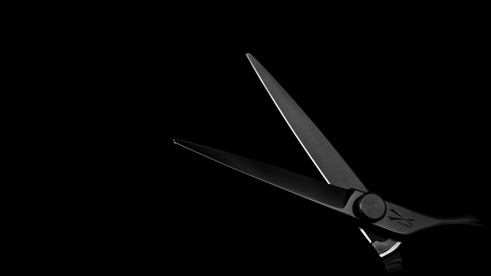
品牌故事 story
少即是剪
拿掉多餘剛好手感
less, but sharper.
nothing extra. just right in hand.
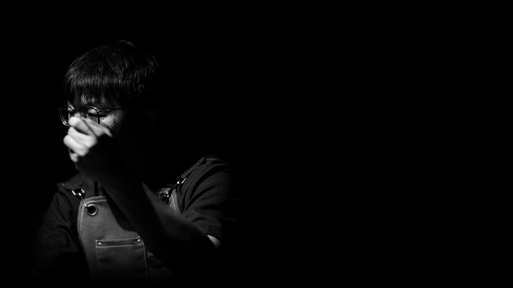
在美髮圈教剪髮，快 20 年了。我一直在想：為什麼設計剪刀的，都不是髮型師？
Nearly 20 years of teaching haircutting, and one question stayed with me: why are the people who design scissors never hairstylists?
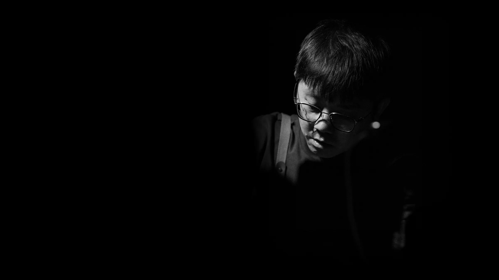
總覺得哪裡缺了那麼一點點。太多剪刀，是為了行銷、為了炫、為了酷而設計。
Something was always missing. Too many shears are designed for marketing, for show, for cool.
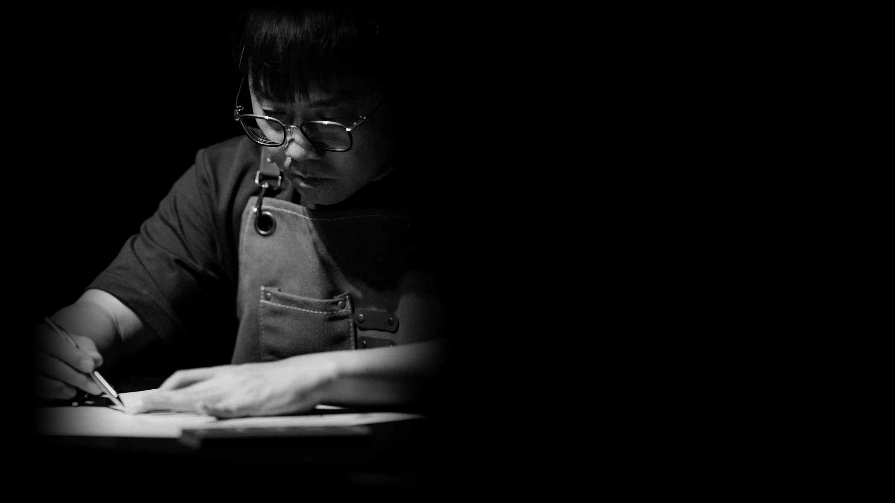
設計理念 design
毫剪延續「少即是剪」，所有美學，都依循實用主義。首先，它要好用；每個髮型師拿到手，都能感到安心。
Milli Peak follows less, but sharper: every aesthetic answers to practicality. First, it has to work, so every stylist who picks it up feels at ease.
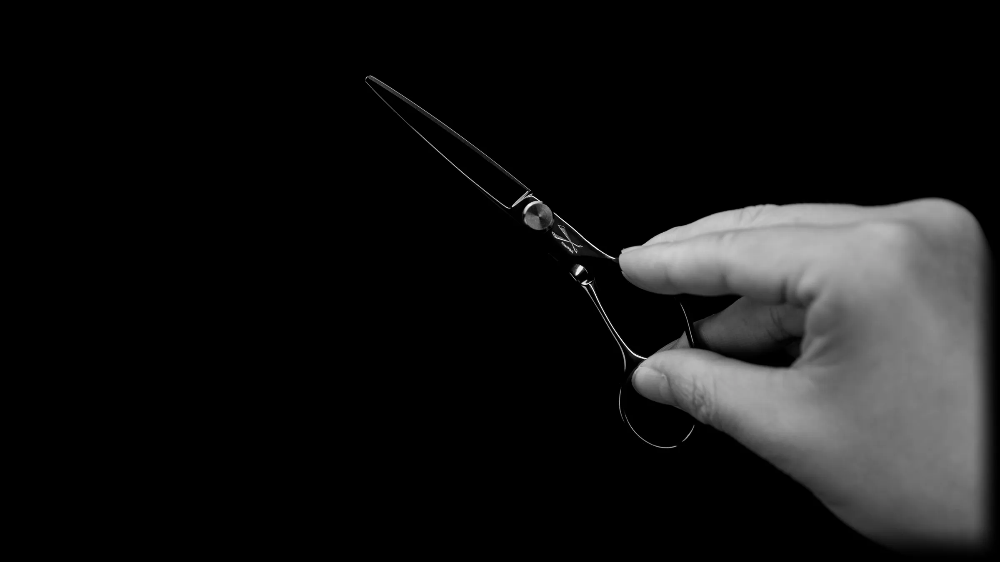
每個細節，都在減少對髮型師手部的傷害，也打開功能上的可能：滑剪、通透打薄刀。
Every detail aims to spare the stylist’s hand, and to open up what shears can do: slide cutting, airy thinning.
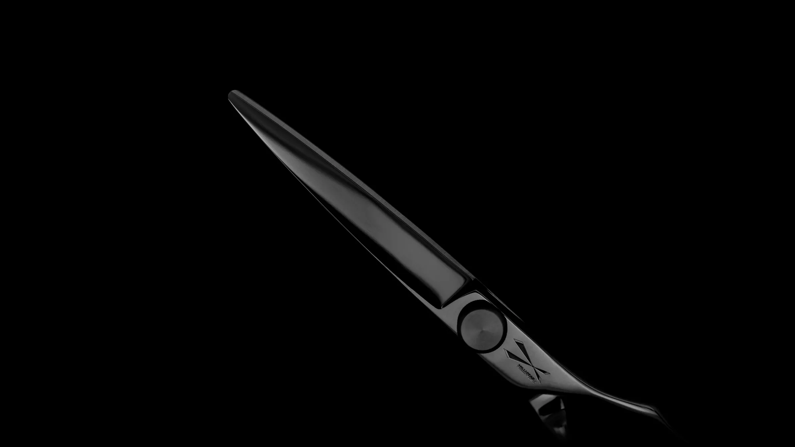
一把剪刀，不只是好看而已。好看是必須的，但一定要好用。
A pair of shears is more than its looks. Looking good is a given; working well is a must.
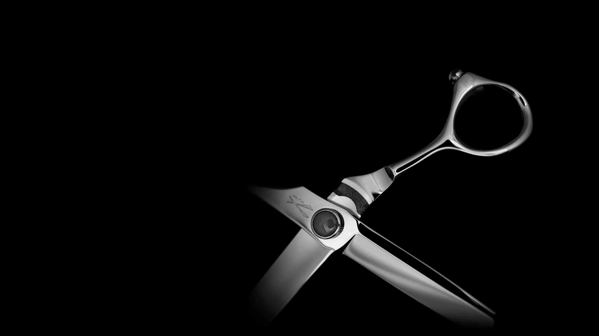
跳脫美髮剪刀的影子，以設計單品為出發點：從影像、包裝，到以萬寶龍鋼筆工藝技術設計的螺絲軸承。
Beyond the shadow of ordinary hair shears, it starts as a designed object: from imagery and packaging to a screw bearing designed with Montblanc pen craftsmanship.
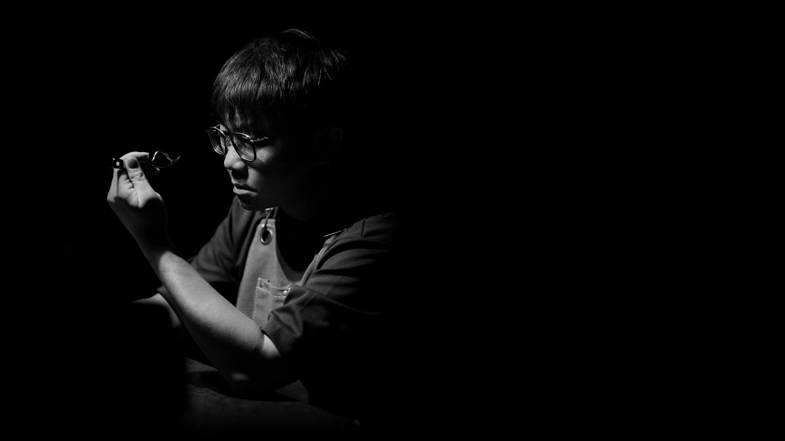
關於 about
魏子淵
一個髮型師用了半生、用過很多把剪刀，才打磨出這個品牌。
A hairstylist spent half a life, and many pairs of shears, shaping this brand.
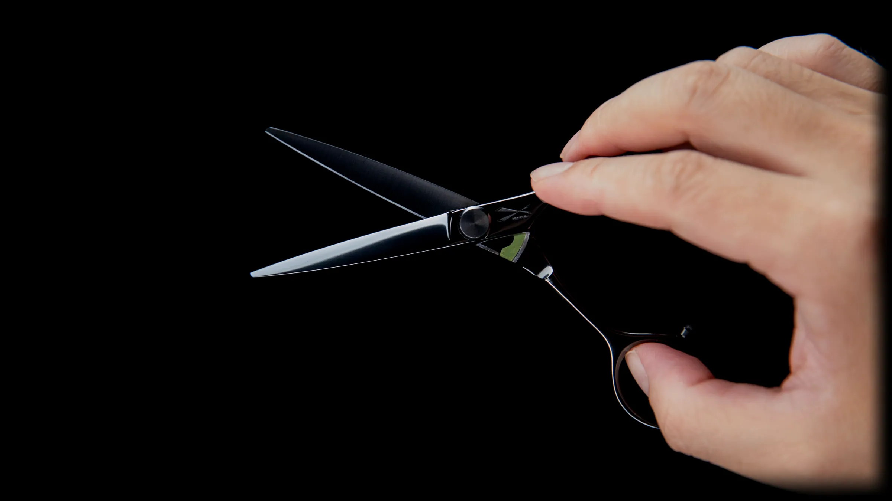
主角依然是髮型師，依然是髮型；我們只是配角。只不過這個配角，誰拿都會是亮點。
The stylist and the hair remain the lead; we are only the supporting role. But this supporting role shines in any hand.
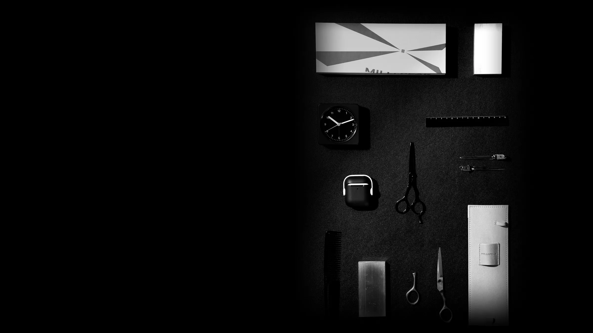
包浩斯 Bauhaus・密斯・凡德羅 Mies van der Rohe
「少即是多」
less is more.
1919 年，包浩斯在德國威瑪成立，設計從此走進日常。
Bauhaus, Weimar, 1919: design steps into everyday life.
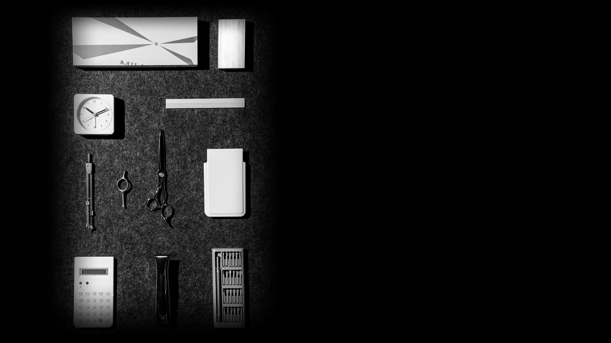
迪特・拉姆斯 Dieter Rams
「少，但要更好」
Less, but better.
1976 年，他與 Dietrich Lubs 為百靈設計的 ET 22 計算機，把多餘的都拿掉，只留下好用。
In 1976, his ET 22 calculator for Braun, designed with Dietrich Lubs, kept only what was useful.
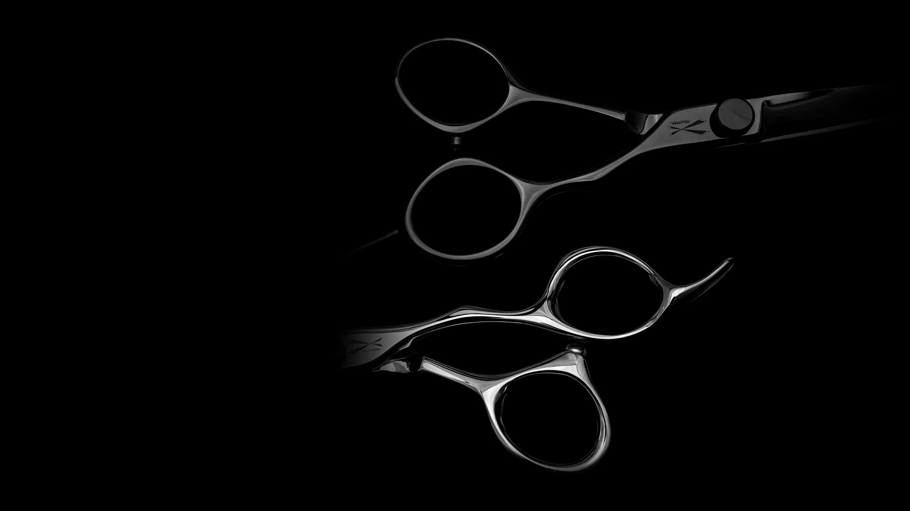
毫剪 Milli Peak
「少即是剪」
less, but sharper.
這是我們的品牌理念，也是我們的設計理念。
This is our brand philosophy, and our design philosophy.